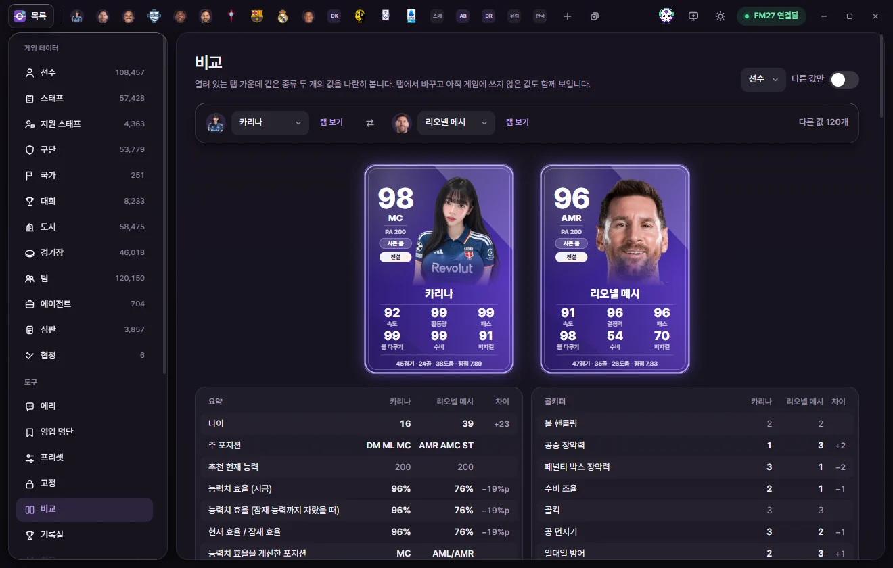

도구
비교
열려 있는 탭 가운데 같은 종류 두 개(선수 둘, 구단 둘 등)의 값을 나란히 놓고 차이를 봅니다. 보기만 하는 화면이라 게임에는 아무것도 쓰지 않습니다.


여는 방법
비교는 열려 있는 탭끼리 합니다. 같은 종류의 탭이 두 개 이상 열려 있어야 합니다.
- 목록에서 비교할 두 사람(또는 두 구단)을 탭으로 엽니다.
- 한쪽 탭 위쪽 오른쪽의 비교 단추(네모 두 개 모양)를 누릅니다.
- 비교 화면이 열리고, 누른 탭이 왼쪽, 같은 종류의 다른 탭이 오른쪽에 놓입니다.
왼쪽 도구 목록의 비교를 눌러도 열립니다. 같은 종류의 탭이 두 개 열려 있지 않으면 '같은 종류의 탭을 두 개 열어 주세요'가 나옵니다. 비교 단추를 눌렀는데 같은 종류의 탭이 하나뿐이면 '비교할 … 탭을 하나 더 열어 주세요'라고 알립니다.
화면 구성
위쪽 막대
- 종류 고르기(오른쪽 위): 두 개 이상 열린 종류가 여럿이면(선수 둘, 구단 둘 등) 어느 종류를 비교할지 고릅니다.
- 다른 값만: 켜면 두 쪽 값이 같은 줄을 숨기고 다른 줄만 보여 줍니다.
- 왼쪽·오른쪽 고르기: 이름 칸을 눌러 같은 종류의 다른 열린 탭으로 바꿉니다. 한쪽에 고른 사람은 다른 쪽 목록에 나오지 않습니다.
- 탭 보기: 그 사람의 탭으로 갑니다.
- 가운데 ⇄ 단추: 왼쪽과 오른쪽을 바꿉니다.
- 오른쪽 끝: '다른 값 N개' 또는 '모든 값이 같습니다'.
선수 카드
선수를 비교할 때는 두 사람의 선수 카드가 위에 나옵니다. 카드는 게임 값으로 그리므로, 탭에서 바꾸고 저장하지 않은 값은 카드에 들어가지 않습니다. 카드의 뜻은 통계·선수 카드·기록실에 있습니다.
값 표
값은 편집 탭과 같은 묶음(기술, 정신, 골키퍼, 성격 등)으로 나뉩니다. 맨 앞 요약 묶음에는 나이, 주 포지션, 추천 현재 능력, 능력치 효율처럼 계산해서 보여 주는 값이 나옵니다.
| 열 | 뜻 |
|---|---|
| 칸 이름 | 편집 탭의 칸 이름 |
| 왼쪽 사람 | 왼쪽 탭의 값 |
| 오른쪽 사람 | 오른쪽 탭의 값 |
| 차이 | 오른쪽 값에서 왼쪽 값을 뺀 값. 숫자 값이 다를 때만 나옵니다. 비율은 %p, 금액은 고른 통화로 나옵니다 |
값이 다른 줄은 강조되어 보입니다. 선택지·날짜·글 같은 값은 차이를 계산하지 않고 두 값만 보여 줍니다. 목록 형태의 값(관계, 언어 등)은 비교에 나오지 않습니다.
아직 저장하지 않은 값
비교 화면은 탭에 보이는 값을 씁니다. 탭에서 바꾸고 아직 '저장'하지 않은 값도 그대로 비교에 들어갑니다. 그래서 값을 바꿔 보면서 다른 선수와 견주어 볼 수 있습니다. 게임에 넣으려면 그 탭으로 돌아가 '저장'을 누르세요(값이 게임에 들어가는 때).